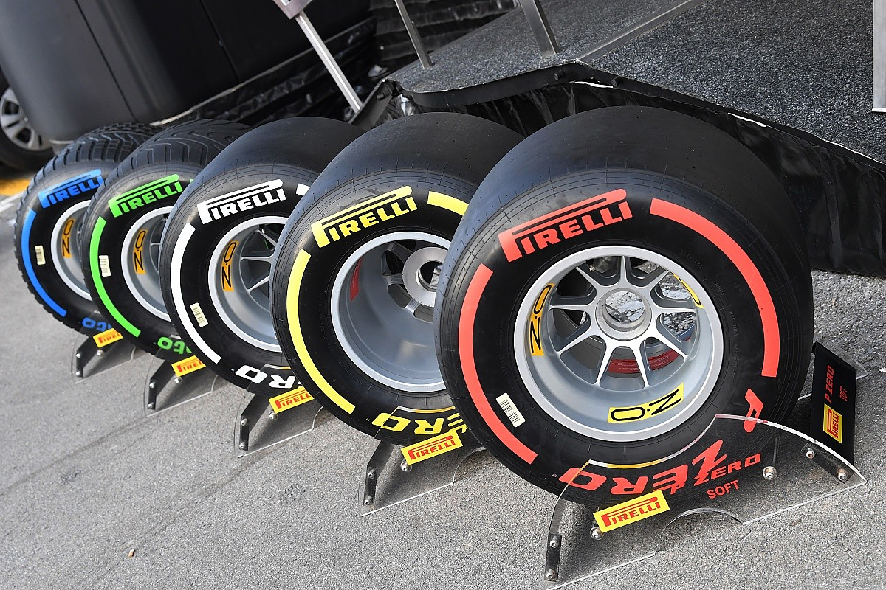

Formula One
Formula One (also known as Formula 1 or F1) is the highest class of international single-seater auto racing sanctioned by the Fédération Internationale de l'Automobile (FIA) and owned by Liberty Media, an American mass media company, through its wholly owned subsidiary, the Formula One Group.
The World Drivers' Championship, which became the FIA Formula One World Championship in 1981, has been one of the premier forms of racing around the world since its inaugural season in 1950.
Teams and Engine Suppliers
There are 10 teams in Formula One, each with 2 drivers which makes up the 20 cars on the grid (name of the lineup in F1). Most of you may know the big teams like Scuderia Ferrari, Mercedes and McLaren. All of these team build a car for their 2 drivers to compete in the 21 Grand Prix races in a year. Due to COVID-19, many races have been cancelled especially in the Americas.
As not all of these teams have enough money to invest into developing an engine, the big teams sell their engines to others. Currently, Mercedes supplies their engines to Williams Racing and Racing Point F1 Team; Ferrari supplies their engines to Haas F1 Team and Alfa Romeo Racing; and Renault supplies their engine to McLaren Racing. Renault used to supply their engines to Red Bull Racing and Scuderia Alpha Tauri but the teams left Renault to pursue Honda as their engine supplier.
Tyres
In Formula 1, there are 5 kinds of tyres that are allowed to be used in a race. There are 3 dry tyres are set for the different tyre hardness. Red is set to the softest compound aka "softs", yellow to "mediums", white to "hards". Intermediates (green) are used there is no rain and the track is wet with no standing water or drying. Wets (blue) are used when there is heavy raining. These tyres can evacuate 85 litres of water per second per tyre at 300kph. As a comparison, that is a bathtub of water per second per car.
All tyres in F1 are sponsored by Pirelli. Pirelli has 5 different compounds of rubber (C1-C5, C1 being the softest and C5 being the hardest). Each race Pirelli can choose 3 rubbers and those are set as the tyres for the race for everyone. Those 3 will be coloured by their compound from red (softest) to white (hardest) Each team is allowed to bring 13 sets of tyres for each of their cars. They can choose however many of each they want.
Formula 1: Drive to Survive
Formula 1: Drive to Survive is a documentary series produced in collaboration between Netflix and Formula One to give an exclusive behind-the-scenes look at the drivers and races of the 2018 and 2019 Formula One World Championships. It premiered on the 8th of March 2019. It is a very exciting tv show and I recommend it to anyone interested!
This was the main reason I got into Formula One Racing. Also, my brother slowly all got into it together. Mercedes has been dominating the races for the past 6 years by winning the constructors championship every year. Many fans are waiting for the day they fall. After recent rule changes, it looks like races will be more competitive soon. :)